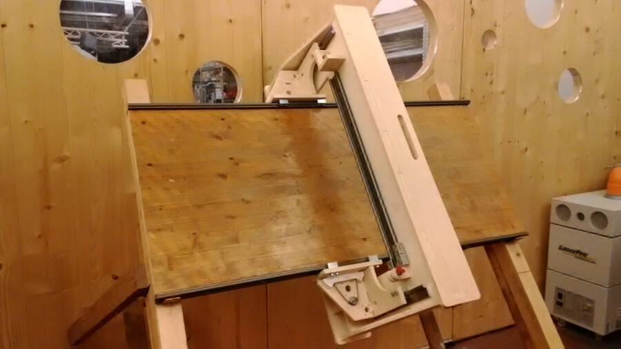
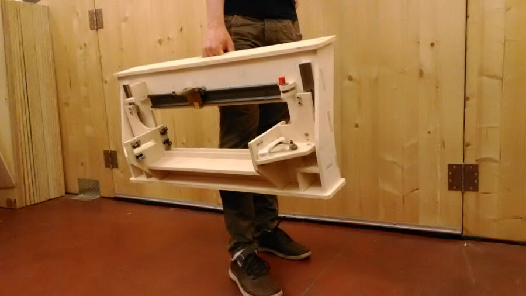
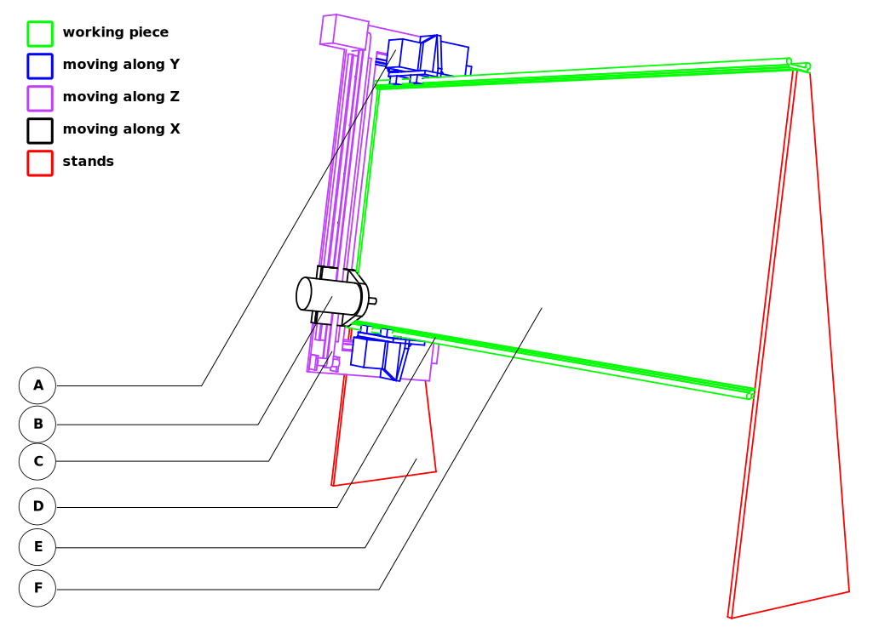

Right now almost all the CNC machines are bigger than the material they cut. I'd like to make something that does the opposite: a machine smaller than the material that it cuts.
This means that to save space inside a fablab the CNC could be stored in a corner, behind the plywood panels, and put to work only when needed.
Dreaming big, it could be possible to make a house (for instance one of the wikihouse projects) using a machine that could be moved and assembled by two people and brought where it's needed with a car.
A second objective would be to make the machine with simple, cheap consumables and parts that can be fabricated with fablabs machines, possibly with the CNC process to make it self replicable.
The big CNC is an amazing machine for a fablab, but it's pretty expensive and cumbersome. S-mill aims to be a cheap alternative, that every fablab could buy or make. In particular, the first version of this project should be self-replicating
S-mill is a milling machine with a "O" structure that allows it to move along the panel.

This version is designed to work with a 50x120cm board, so it's easily trasportable when dismounted

This machine is moving in a different way from other CNC routers. in particular the working piece is standing still, supported by two stands on the sides. The Y axis is parallel to the ground, the X axis is (almost) perpendicular, and Z axis is perpendicular to the piece.

A - Y movement
B - Spindle
C - X movement
D - Y rail
E - Stand
F - Working piece
{kind=link}